Introdução à Programação Orientada a Objetos
Orientação a Objetos
Introdução à Programação Orientada a Objetos
Profa. Alana Neo
alana.neo@ifms.edu.br
Por que programar?
Geralmente, isto é feito quando se precisa automatizar processos do nosso dia a dia, para assim ganhar tempo e ser possível se dedicar a outras atividades que necessitam de uma maior intervenção humana.
O processo de programar pode inicialmente parecer complexo e abstrato, mas com o passar do tempo – na verdade, prática – vai se tornando natural a ponto de identificar-se um “programa” em qualquer lugar.
Introdução
Para programarmos, usamos uma linguagem de programação que possibilita informar ao computador como ele deve se comportar e assim conseguimos automatizar o processo desejado.
Para atingirmos esse objetivo, podemos utilizar uma linguagem de programação de alto nível.
Que disponibiliza comandos (palavras-chaves) bem próximos de uma linguagem natural.
Linguagem de alto e baixo nível
Linguagem de baixo nível
É uma linguagem mais próxima da Linguagem de Máquina, ou seja, mais próxima do hardware. Exemplo: Assembler.
Linguagem de Alto nível
São linguagens cada vez mais afastadas da Linguagem de Máquina. Exemplo: Java.
Histórico das linguagens de alto e baixo nível
Nos primórdios da computação, era necessário usar código de máquina para programar, o que era chamado de linguagem de baixo nível. Que usava cartões perfurados para “conversar” com o computador.
Esse “diálogo” era propício a erros, que terminavam por acabar com a produtividade e com a vontade de se trabalhar com computadores.
Uma das grandes vantagens do surgimento de linguagens de alto nível, em relação a uma linguagem de baixo nível, foi a melhoria do processo chamado tempo de compilação.
Quando existiam apenas linguagens de baixo nível, que usavam os cartões citados para criar nossos programas, o processo de programação era muito artesanal, quase um processo de tentativa e erro.
Página 8
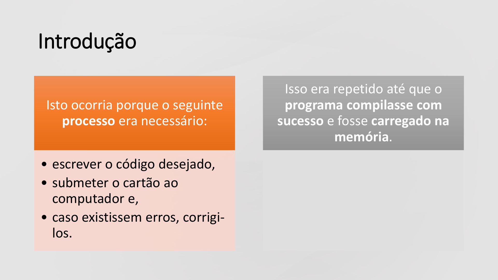
Introdução
Isso era repetido até que oIsto ocorria porque o seguinte programa compilasse com processo era necessário: sucesso e fosse carregado na memória.
- escrever o código desejado,
- submeter o cartão ao computador e,
- caso existissem erros, corrigi- los.
Página 9
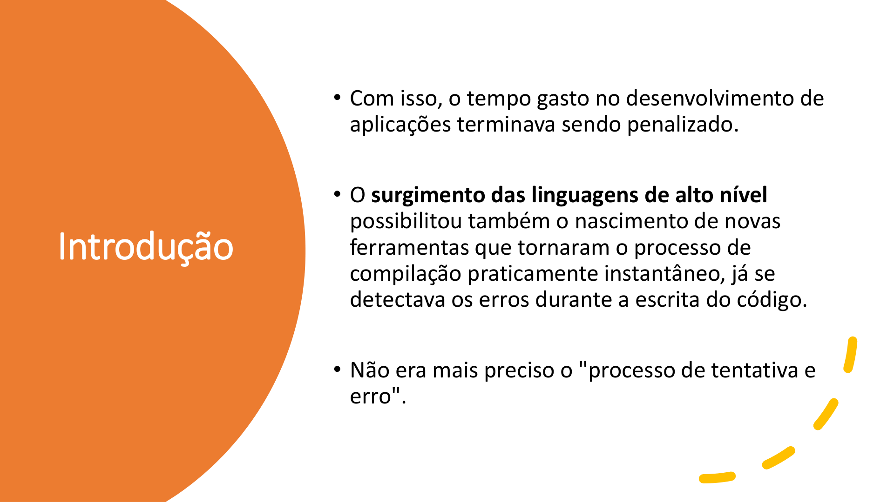
Com isso, o tempo gasto no desenvolvimento de aplicações terminava sendo penalizado.
O surgimento das linguagens de alto nível possibilitou também o nascimento de novas ferramentas que tornaram o processo deIntrodução compilação praticamente instantâneo, já se detectava os erros durante a escrita do código.
Não era mais preciso o “processo de tentativa e erro”.
Página 10
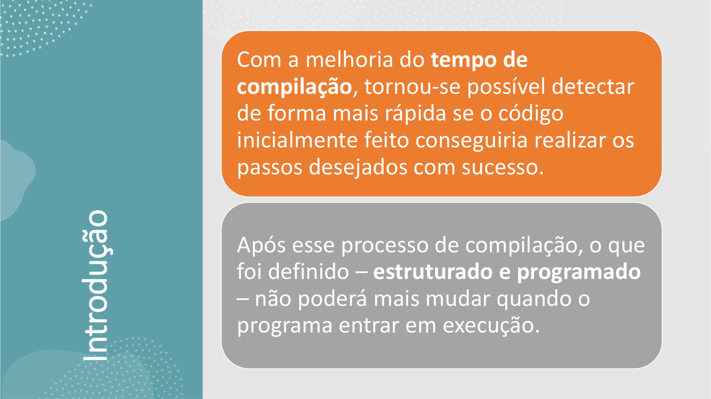
Com a melhoria do tempo de compilação, tornou-se possível detectar de forma mais rápida se o código inicialmente feito conseguiria realizar os passos desejados com sucesso.
Após esse processo de compilação, o que foi definido – estruturado e programado – não poderá mais mudar quando o programa entrar em execução.Introdução
Compilador
O que é um Compilador?
Compilador = “Tradutor”
O código precisa ser processado antes de executar
Página 12
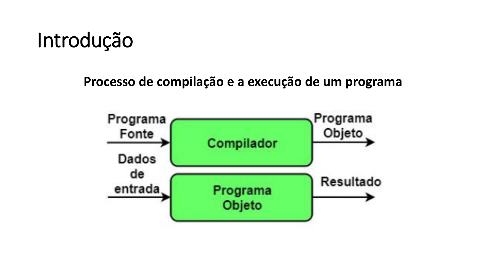
Introdução
Processo de compilação e a execução de um programaInterpretação X Compilação
Nas linguagens interpretadas um programa é executado instrução a instrução, ou seja, cada comando é primeiro traduzido para a linguagem de máquina para somente em seguida ser executado.
Na interpretação as ações resultantes de comandos da linguagem de alto nível são executadas diretamente seguindo os passos:
Obter próximo comando determinar ações a executar realizar a ação
Interpretação X Compilação 2
Nas linguagens compiladas um programa é executado somente quando toda a tradução foi completada.
A compilação de um programa fonte prevê que o mesmo seja traduzido para a linguagem de máquina correspondente, antes da execução.
- Cria o código fonte
- Cria o programa objeto
- Cria o programa executável
Página 15
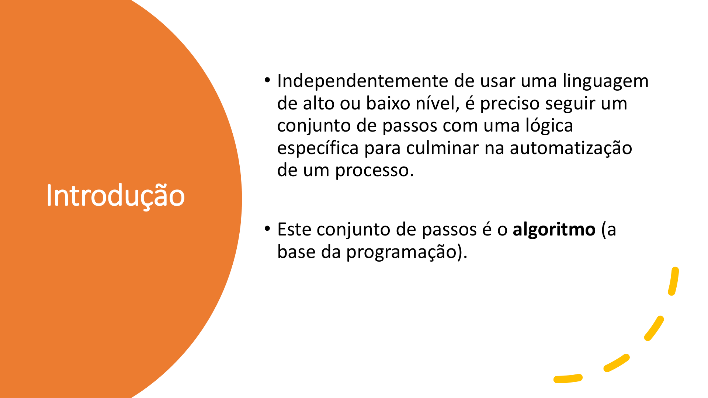
- Independentemente de usar uma linguagem de alto ou baixo nível, é preciso seguir um conjunto de passos com uma lógica específica para culminar na automatização de um processo. Introdução - Este conjunto de passos é o algoritmo (a base da programação).
Página 16
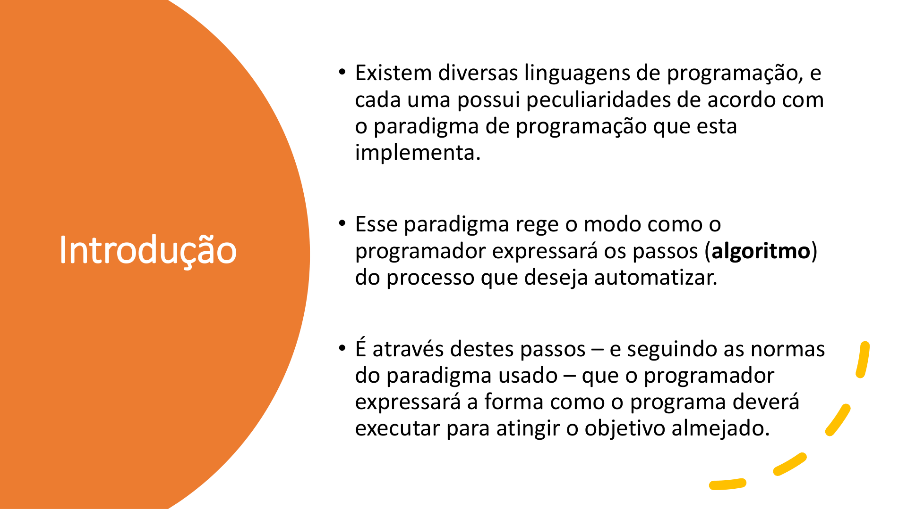
Existem diversas linguagens de programação, e cada uma possui peculiaridades de acordo com o paradigma de programação que esta implementa.
- Esse paradigma rege o modo como o programador expressará os passos (algoritmo)Introdução do processo que deseja automatizar. - É através destes passos – e seguindo as normas do paradigma usado – que o programador expressará a forma como o programa deverá executar para atingir o objetivo almejado.
Página 17
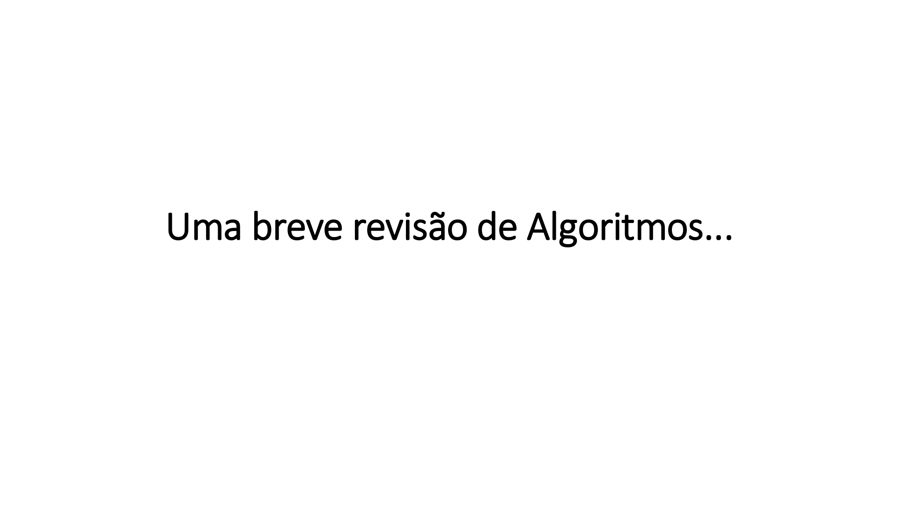
Uma breve revisão de Algoritmos…
Página 18
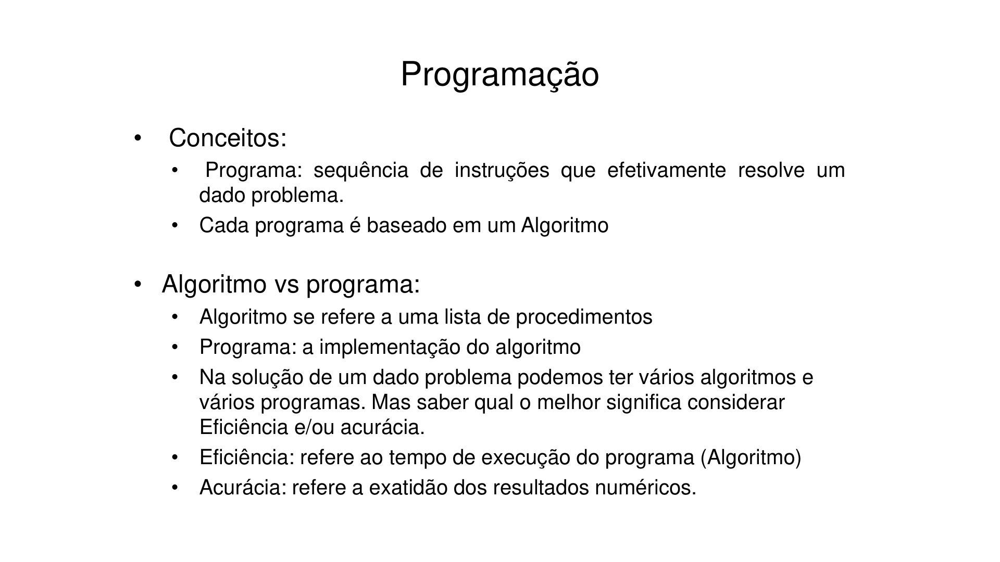
Programação
- Conceitos:
- Programa: sequência de instruções que efetivamente resolve um dado problema.
- Cada programa é baseado em um Algoritmo
- Algoritmo vs programa:
- Algoritmo se refere a uma lista de procedimentos
- Programa: a implementação do algoritmo
- Na solução de um dado problema podemos ter vários algoritmos e vários programas. Mas saber qual o melhor significa considerar Eficiência e/ou acurácia.
- Eficiência: refere ao tempo de execução do programa (Algoritmo)
- Acurácia: refere a exatidão dos resultados numéricos.
Página 19
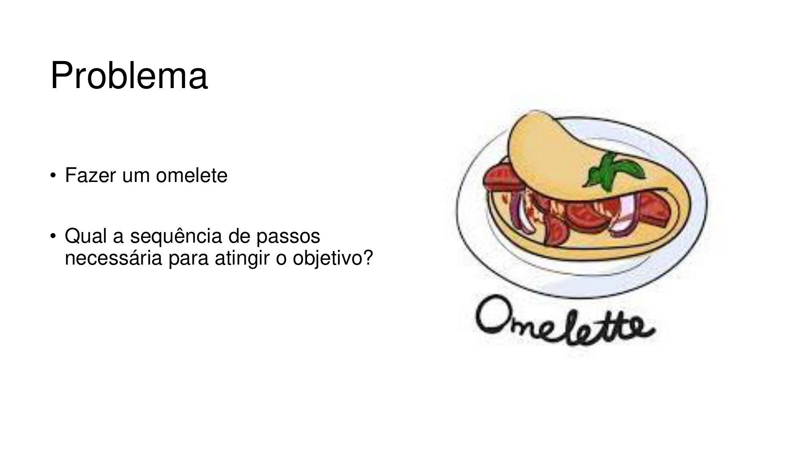
Problema
Fazer um omelete
Qual a sequência de passos necessária para atingir o objetivo?
Página 20
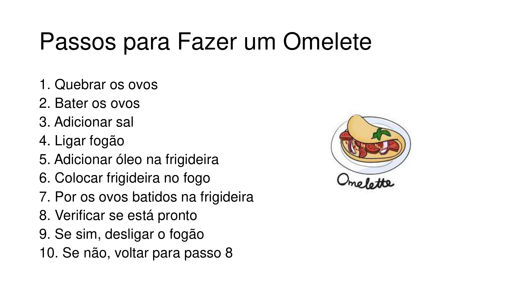
Passos para Fazer um Omelete
- Quebrar os ovos
- Bater os ovos
- Adicionar sal
- Ligar fogão
- Adicionar óleo na frigideira
- Colocar frigideira no fogo
- Por os ovos batidos na frigideira
- Verificar se está pronto
- Se sim, desligar o fogão
- Se não, voltar para passo 8
Página 21
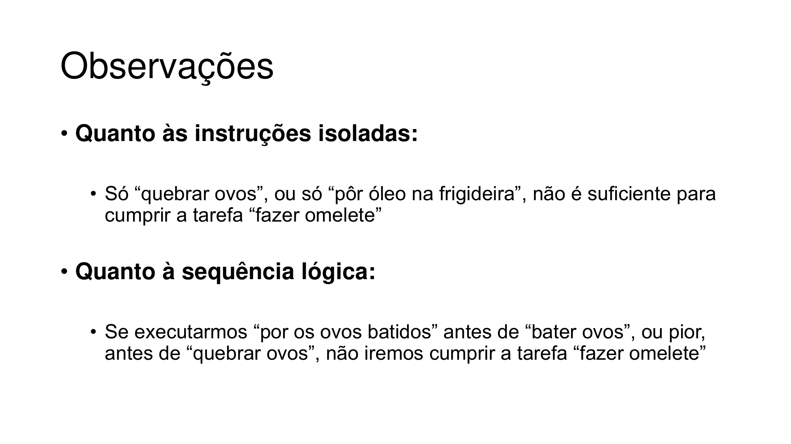
Observações
Quanto às instruções isoladas:
- Só “quebrar ovos”, ou só “pôr óleo na frigideira”, não é suficiente para cumprir a tarefa “fazer omelete”
Quanto à sequência lógica:
- Se executarmos “por os ovos batidos” antes de “bater ovos”, ou pior, antes de “quebrar ovos”, não iremos cumprir a tarefa “fazer omelete”
Página 22
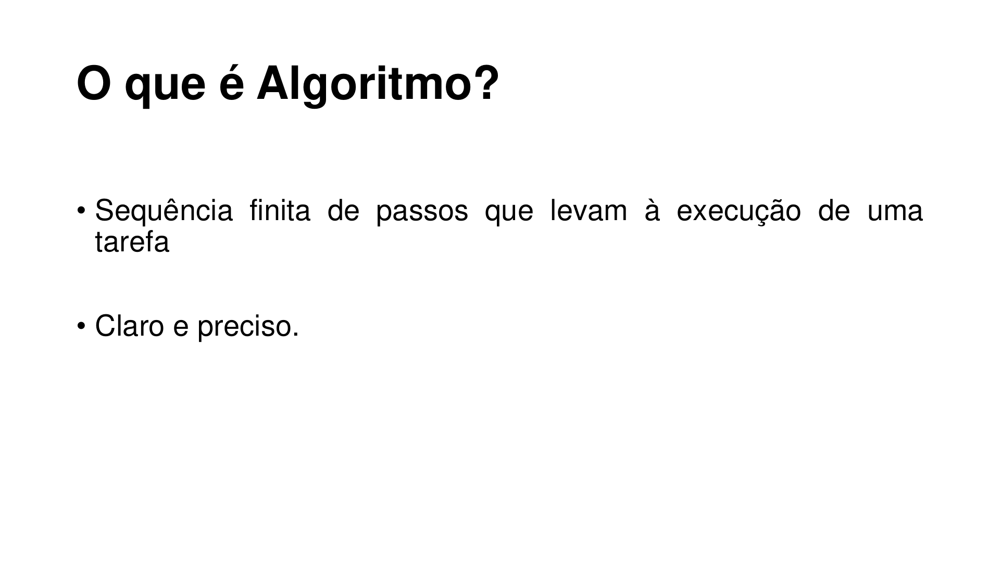
O que é Algoritmo?
Sequência finita de passos que levam à execução de uma tarefa
Claro e preciso.
Página 23
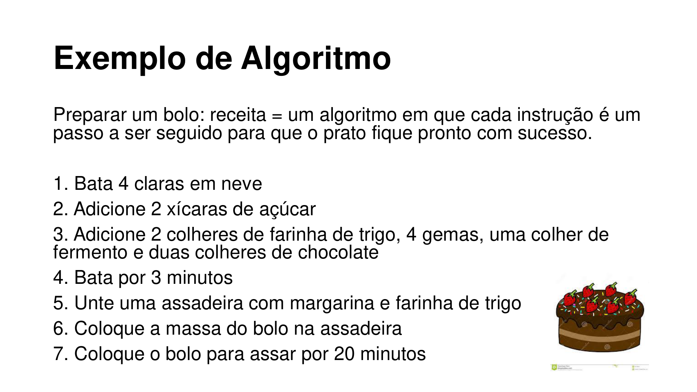
Exemplo de Algoritmo
Preparar um bolo: receita = um algoritmo em que cada instrução é um passo a ser seguido para que o prato fique pronto com sucesso.
- Bata 4 claras em neve
- Adicione 2 xícaras de açúcar
- Adicione 2 colheres de farinha de trigo, 4 gemas, uma colher de fermento e duas colheres de chocolate
- Bata por 3 minutos
- Unte uma assadeira com margarina e farinha de trigo
- Coloque a massa do bolo na assadeira
- Coloque o bolo para assar por 20 minutos
Página 24
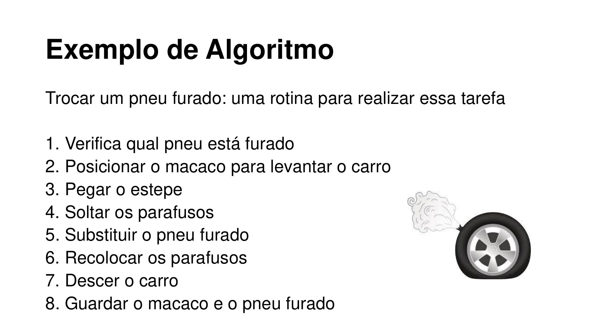
Exemplo de Algoritmo
Trocar um pneu furado: uma rotina para realizar essa tarefa
- Verifica qual pneu está furado
- Posicionar o macaco para levantar o carro
- Pegar o estepe
- Soltar os parafusos
- Substituir o pneu furado
- Recolocar os parafusos
- Descer o carro
- Guardar o macaco e o pneu furado
Página 25
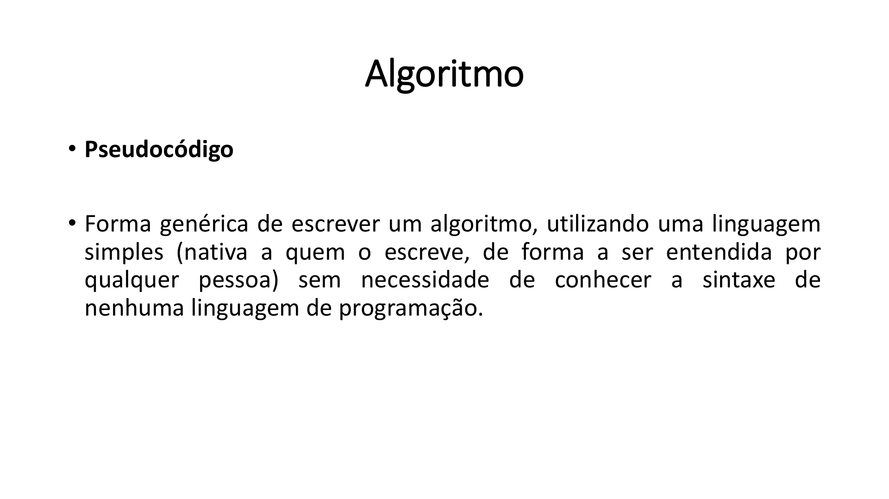
Algoritmo
Pseudocódigo
Forma genérica de escrever um algoritmo, utilizando uma linguagem simples (nativa a quem o escreve, de forma a ser entendida por qualquer pessoa) sem necessidade de conhecer a sintaxe de nenhuma linguagem de programação.
Página 26
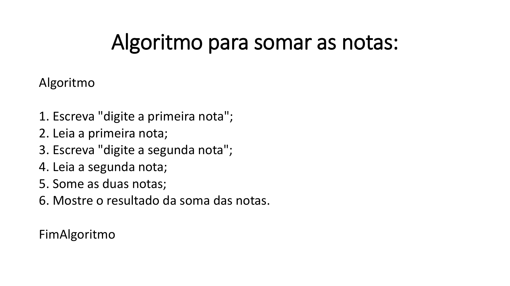
Algoritmo para somar as notas:
Algoritmo
- Escreva “digite a primeira nota”;
- Leia a primeira nota;
- Escreva “digite a segunda nota”;
- Leia a segunda nota;
- Some as duas notas;
- Mostre o resultado da soma das notas.
FimAlgoritmo
Página 27
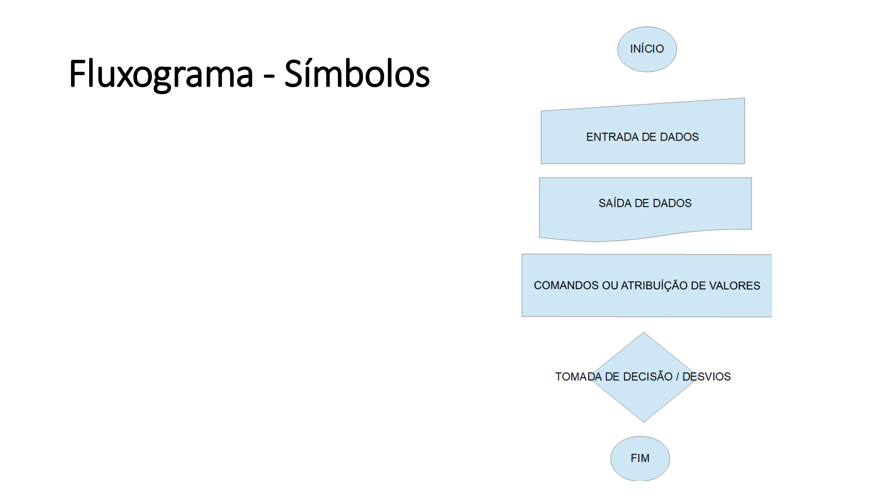
Fluxograma - Símbolos
Página 28
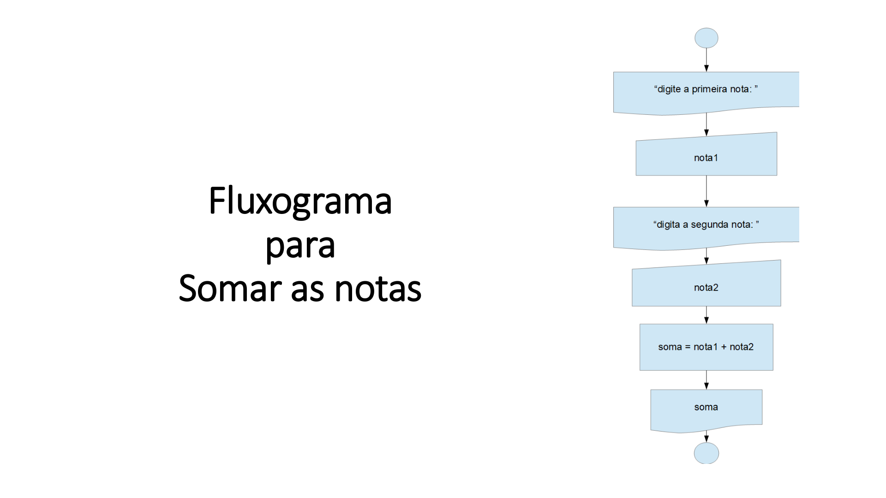
Fluxograma para Somar as notas
Página 29
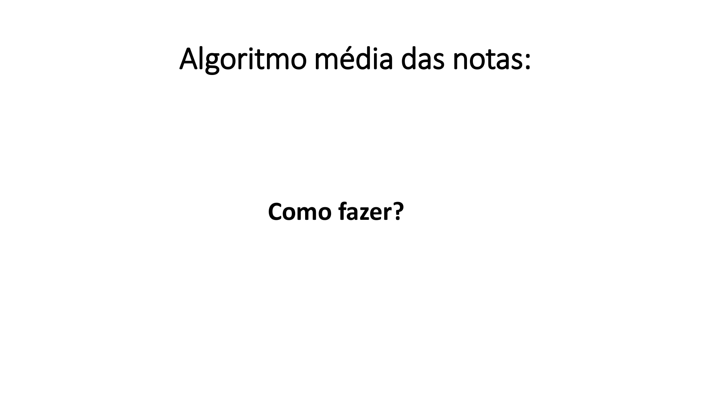
Algoritmo média das notas:
Como fazer?Página 30
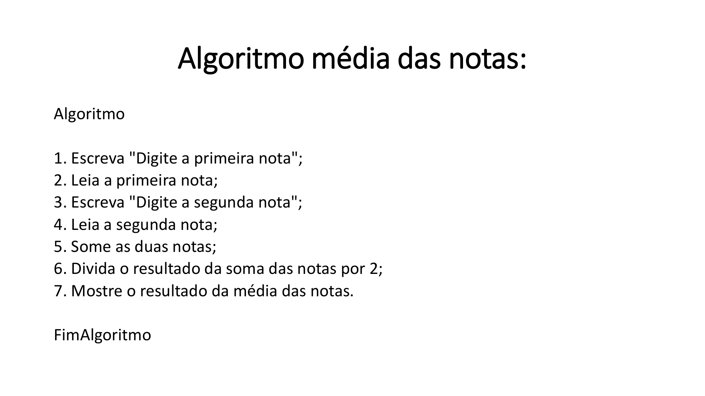
Algoritmo média das notas:
Algoritmo
- Escreva “Digite a primeira nota”;
- Leia a primeira nota;
- Escreva “Digite a segunda nota”;
- Leia a segunda nota;
- Some as duas notas;
- Divida o resultado da soma das notas por 2;
- Mostre o resultado da média das notas.
FimAlgoritmo
Página 31
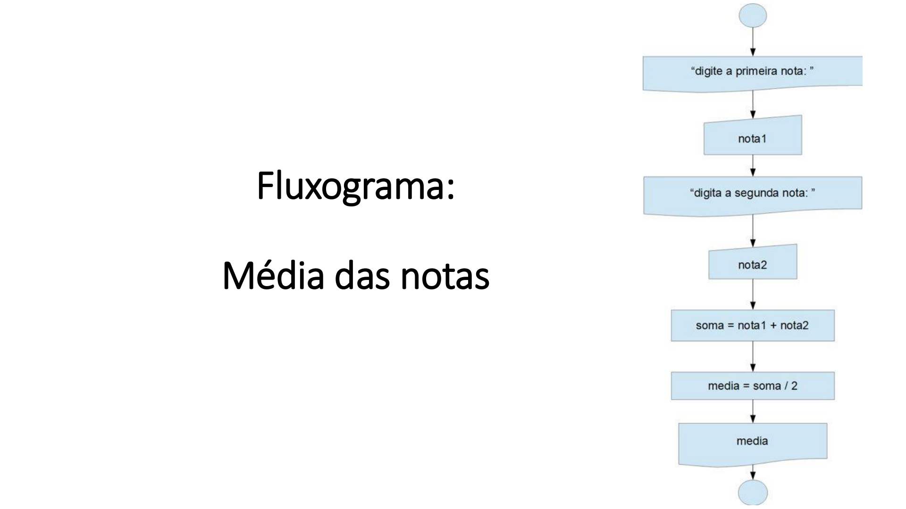
Fluxograma:
Média das notas
Página 32
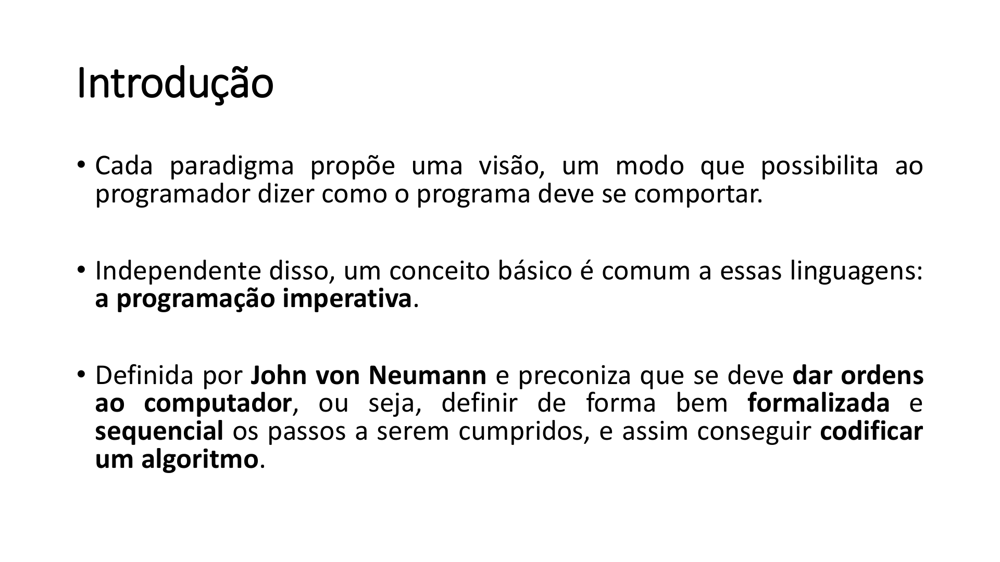
Introdução
Cada paradigma propõe uma visão, um modo que possibilita ao programador dizer como o programa deve se comportar.
Independente disso, um conceito básico é comum a essas linguagens: a programação imperativa.
Definida por John von Neumann e preconiza que se deve dar ordens ao computador, ou seja, definir de forma bem formalizada e sequencial os passos a serem cumpridos, e assim conseguir codificar um algoritmo.
Página 33
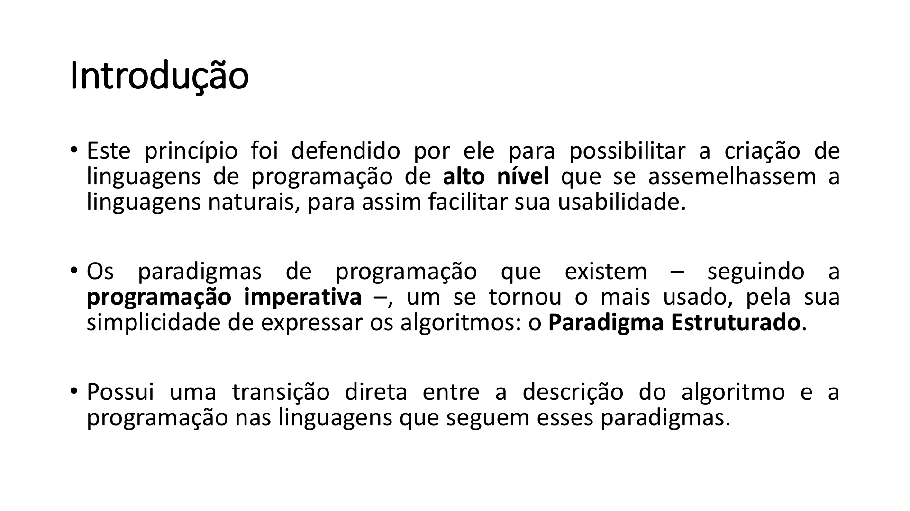
Introdução
Este princípio foi defendido por ele para possibilitar a criação de linguagens de programação de alto nível que se assemelhassem a linguagens naturais, para assim facilitar sua usabilidade.
Os paradigmas de programação que existem – seguindo a programação imperativa –, um se tornou o mais usado, pela sua simplicidade de expressar os algoritmos: o Paradigma Estruturado.
Possui uma transição direta entre a descrição do algoritmo e a programação nas linguagens que seguem esses paradigmas.
Página 34
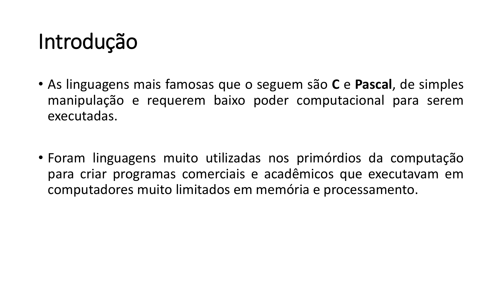
Introdução
As linguagens mais famosas que o seguem são C e Pascal, de simples manipulação e requerem baixo poder computacional para serem executadas.
Foram linguagens muito utilizadas nos primórdios da computação para criar programas comerciais e acadêmicos que executavam em computadores muito limitados em memória e processamento.
Página 35
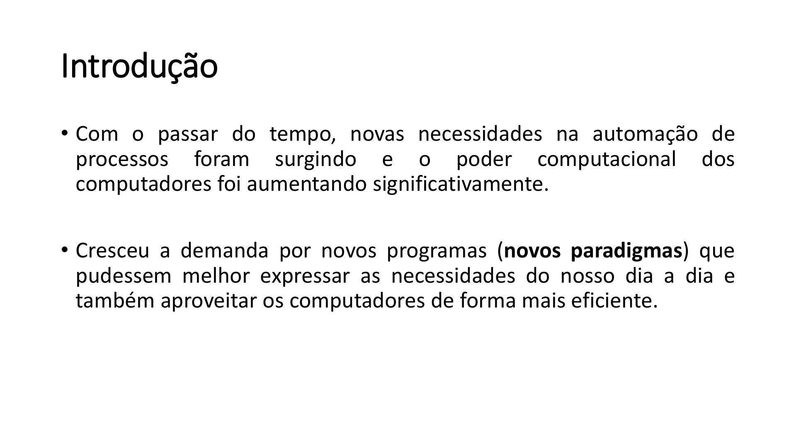
Introdução
Com o passar do tempo, novas necessidades na automação de processos foram surgindo e o poder computacional dos computadores foi aumentando significativamente.
Cresceu a demanda por novos programas (novos paradigmas) que pudessem melhor expressar as necessidades do nosso dia a dia e também aproveitar os computadores de forma mais eficiente.
Página 36
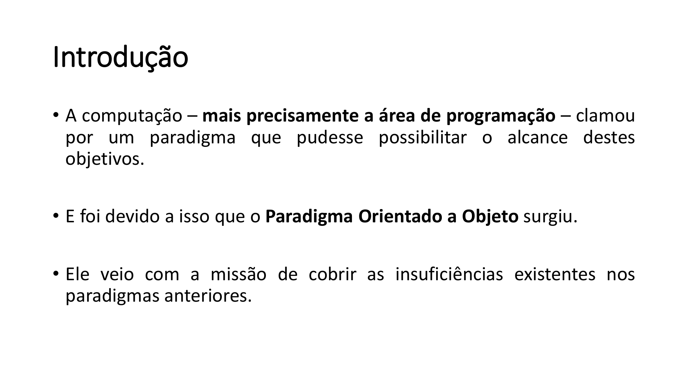
Introdução
A computação – mais precisamente a área de programação – clamou por um paradigma que pudesse possibilitar o alcance destes objetivos.
E foi devido a isso que o Paradigma Orientado a Objeto surgiu.
Ele veio com a missão de cobrir as insuficiências existentes nos paradigmas anteriores.
Página 37
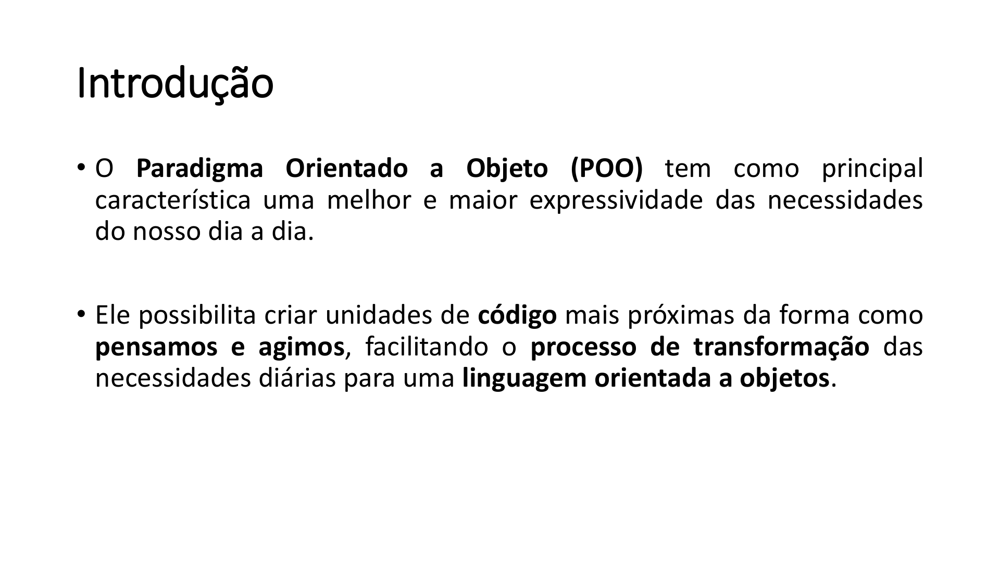
Introdução
O Paradigma Orientado a Objeto (POO) tem como principal característica uma melhor e maior expressividade das necessidades do nosso dia a dia.
Ele possibilita criar unidades de código mais próximas da forma como pensamos e agimos, facilitando o processo de transformação das necessidades diárias para uma linguagem orientada a objetos.
Página 38
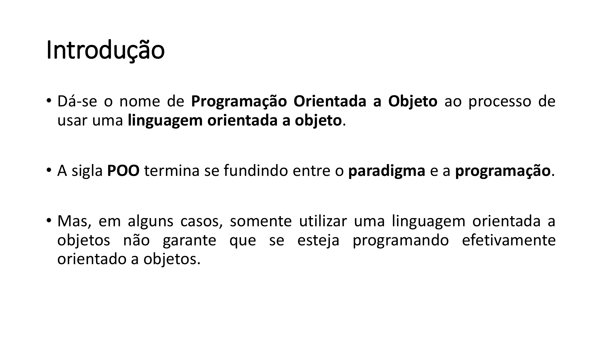
Introdução
Dá-se o nome de Programação Orientada a Objeto ao processo de usar uma linguagem orientada a objeto.
A sigla POO termina se fundindo entre o paradigma e a programação.
Mas, em alguns casos, somente utilizar uma linguagem orientada a objetos não garante que se esteja programando efetivamente orientado a objetos.
Página 39
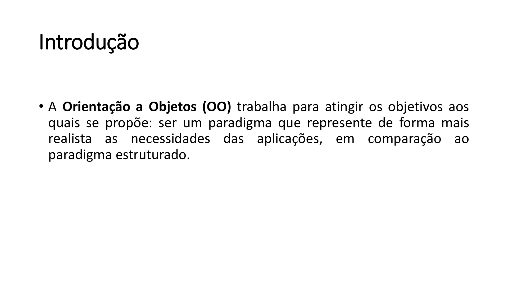
Introdução
- A Orientação a Objetos (OO) trabalha para atingir os objetivos aos quais se propõe: ser um paradigma que represente de forma mais realista as necessidades das aplicações, em comparação ao paradigma estruturado.
Página 40
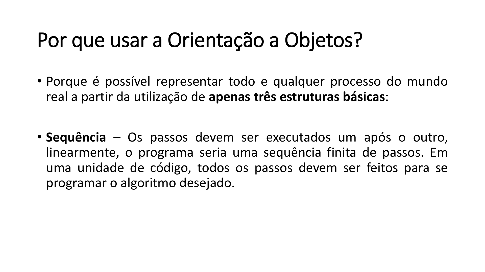
Por que usar a Orientação a Objetos?
Porque é possível representar todo e qualquer processo do mundo real a partir da utilização de apenas três estruturas básicas:
Sequência – Os passos devem ser executados um após o outro, linearmente, o programa seria uma sequência finita de passos. Em uma unidade de código, todos os passos devem ser feitos para se programar o algoritmo desejado.
Página 41
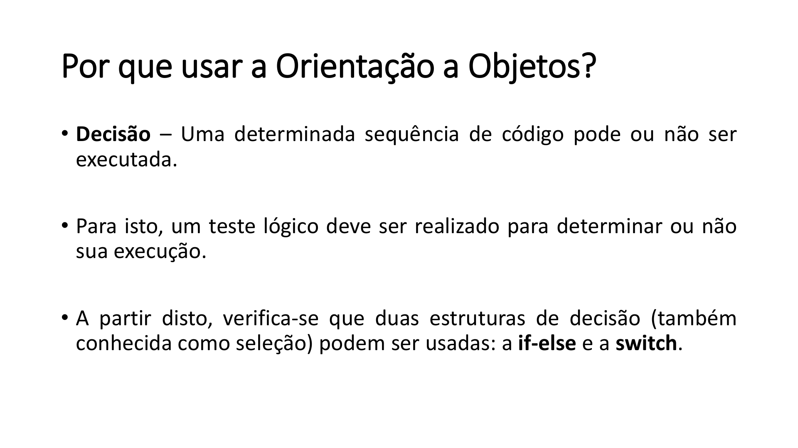
Por que usar a Orientação a Objetos?
Decisão – Uma determinada sequência de código pode ou não ser executada.
Para isto, um teste lógico deve ser realizado para determinar ou não sua execução.
A partir disto, verifica-se que duas estruturas de decisão (também conhecida como seleção) podem ser usadas: a if-else e a switch.
Página 42
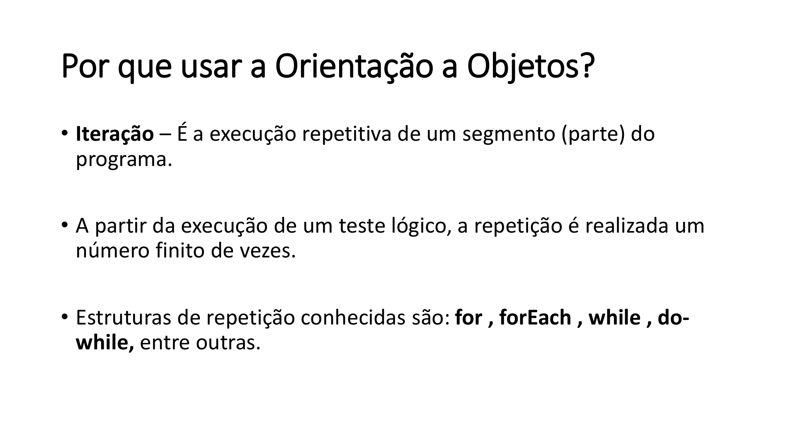
Por que usar a Orientação a Objetos?
Iteração – É a execução repetitiva de um segmento (parte) do programa.
A partir da execução de um teste lógico, a repetição é realizada um número finito de vezes.
Estruturas de repetição conhecidas são: for , forEach , while , do- while, entre outras.
Página 43
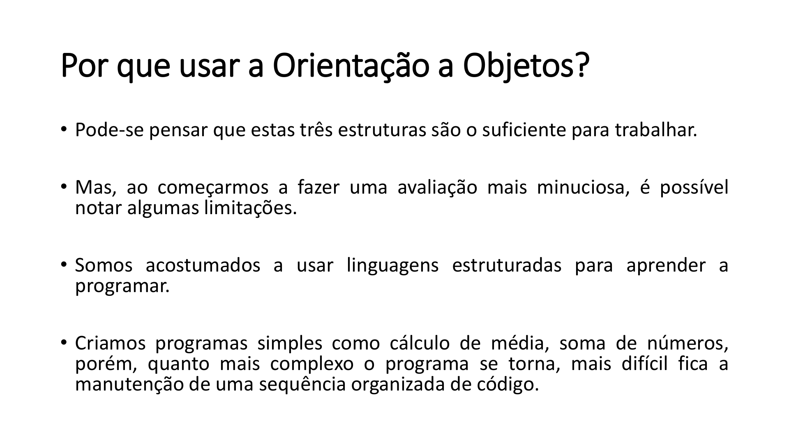
Por que usar a Orientação a Objetos?
Pode-se pensar que estas três estruturas são o suficiente para trabalhar.
Mas, ao começarmos a fazer uma avaliação mais minuciosa, é possível notar algumas limitações.
Somos acostumados a usar linguagens estruturadas para aprender a programar.
Criamos programas simples como cálculo de média, soma de números, porém, quanto mais complexo o programa se torna, mais difícil fica a manutenção de uma sequência organizada de código.
Página 44
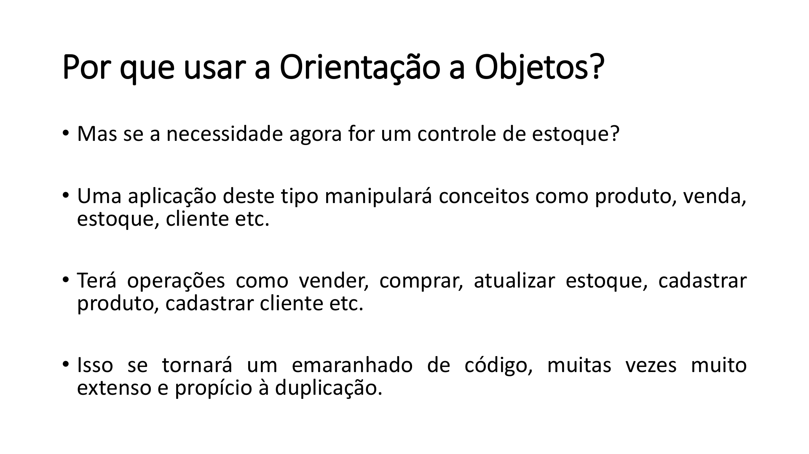
Por que usar a Orientação a Objetos?
Mas se a necessidade agora for um controle de estoque?
Uma aplicação deste tipo manipulará conceitos como produto, venda, estoque, cliente etc.
Terá operações como vender, comprar, atualizar estoque, cadastrar produto, cadastrar cliente etc.
Isso se tornará um emaranhado de código, muitas vezes muito extenso e propício à duplicação.
Página 45
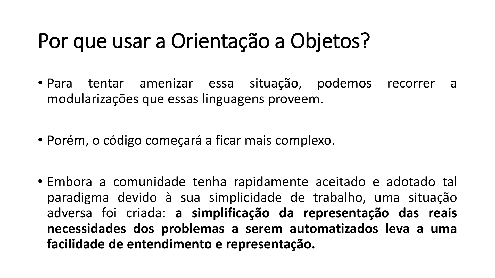
Por que usar a Orientação a Objetos?
Para tentar amenizar essa situação, podemos recorrer a modularizações que essas linguagens proveem.
Porém, o código começará a ficar mais complexo.
Embora a comunidade tenha rapidamente aceitado e adotado tal paradigma devido à sua simplicidade de trabalho, uma situação adversa foi criada: a simplificação da representação das reais necessidades dos problemas a serem automatizados leva a uma facilidade de entendimento e representação.
Página 46
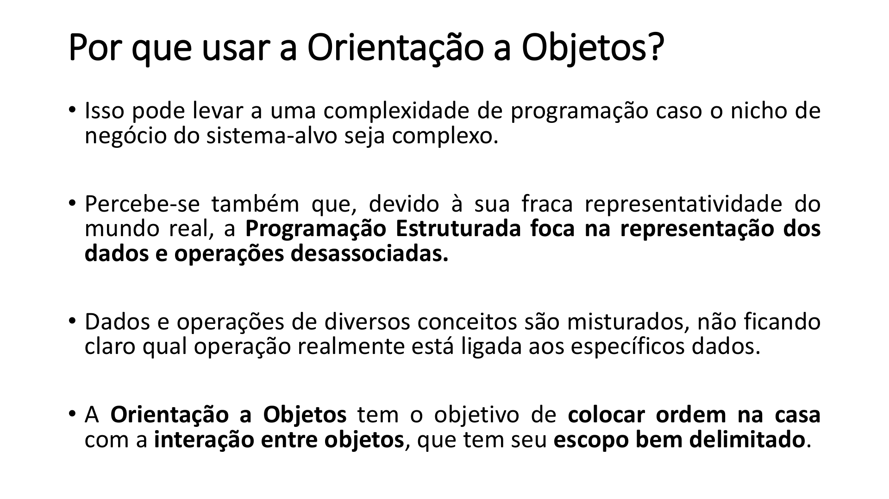
Por que usar a Orientação a Objetos?
Isso pode levar a uma complexidade de programação caso o nicho de negócio do sistema-alvo seja complexo.
Percebe-se também que, devido à sua fraca representatividade do mundo real, a Programação Estruturada foca na representação dos dados e operações desassociadas.
Dados e operações de diversos conceitos são misturados, não ficando claro qual operação realmente está ligada aos específicos dados.
A Orientação a Objetos tem o objetivo de colocar ordem na casa com a interação entre objetos, que tem seu escopo bem delimitado.
Página 47
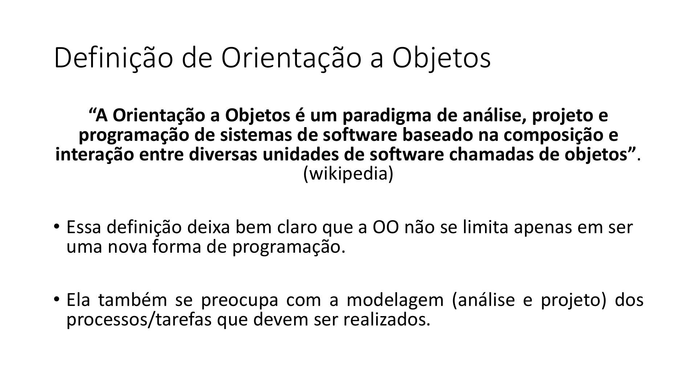
Definição de Orientação a Objetos
“A Orientação a Objetos é um paradigma de análise, projeto eprogramação de sistemas de software baseado na composição e interação entre diversas unidades de software chamadas de objetos”. (wikipedia)
Essa definição deixa bem claro que a OO não se limita apenas em ser uma nova forma de programação.
Ela também se preocupa com a modelagem (análise e projeto) dos processos/tarefas que devem ser realizados.
Página 48
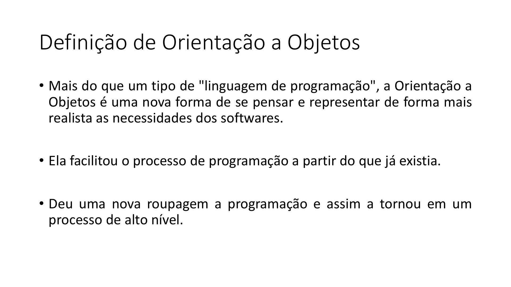
Definição de Orientação a Objetos
Mais do que um tipo de “linguagem de programação”, a Orientação a Objetos é uma nova forma de se pensar e representar de forma mais realista as necessidades dos softwares.
Ela facilitou o processo de programação a partir do que já existia.
Deu uma nova roupagem a programação e assim a tornou em um processo de alto nível.
Página 49
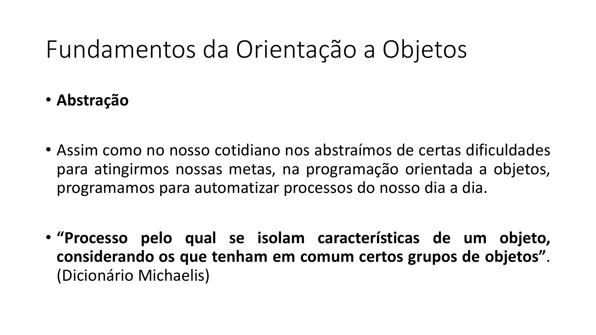
Fundamentos da Orientação a Objetos
Abstração
Assim como no nosso cotidiano nos abstraímos de certas dificuldades para atingirmos nossas metas, na programação orientada a objetos, programamos para automatizar processos do nosso dia a dia.
“Processo pelo qual se isolam características de um objeto, considerando os que tenham em comum certos grupos de objetos”. (Dicionário Michaelis)
Página 50
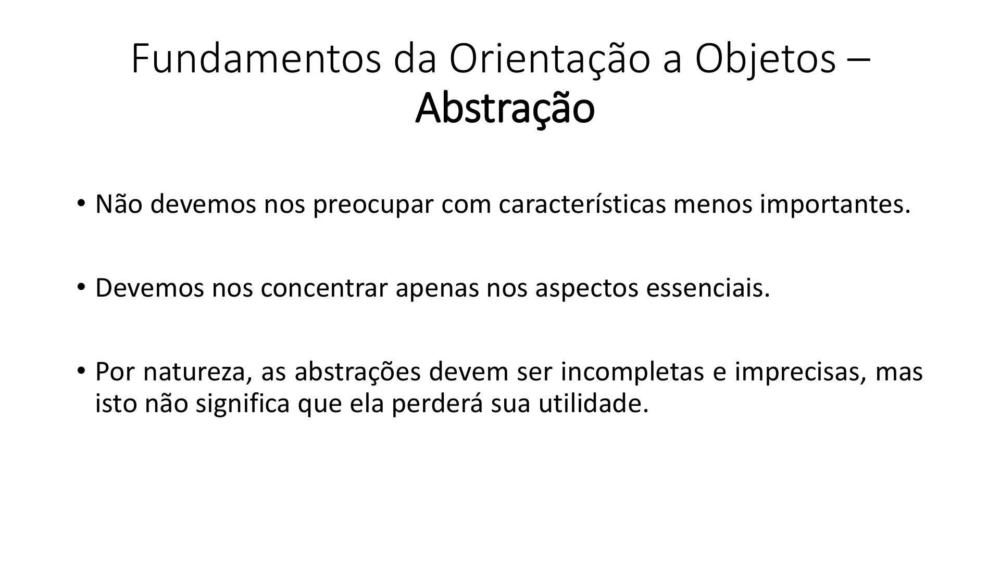
Fundamentos da Orientação a Objetos – Abstração
Não devemos nos preocupar com características menos importantes.
Devemos nos concentrar apenas nos aspectos essenciais.
Por natureza, as abstrações devem ser incompletas e imprecisas, mas isto não significa que ela perderá sua utilidade.
Página 51
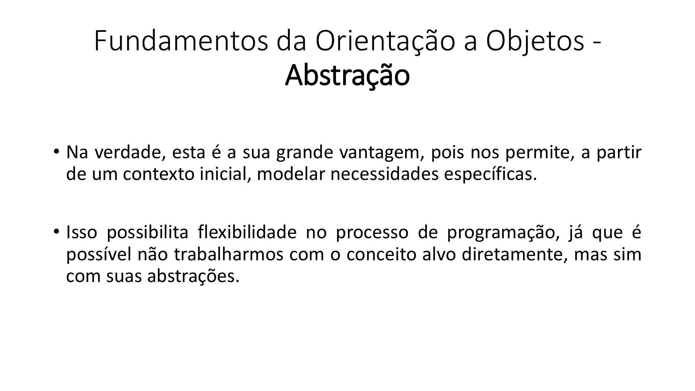
Fundamentos da Orientação a Objetos - Abstração
Na verdade, esta é a sua grande vantagem, pois nos permite, a partir de um contexto inicial, modelar necessidades específicas.
Isso possibilita flexibilidade no processo de programação, já que é possível não trabalharmos com o conceito alvo diretamente, mas sim com suas abstrações.
Página 52
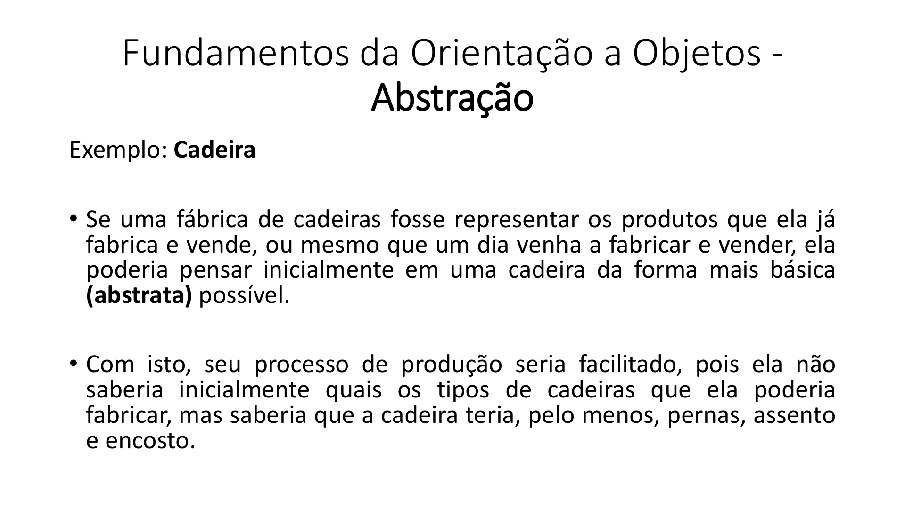
Fundamentos da Orientação a Objetos - Abstração
Exemplo: Cadeira
Se uma fábrica de cadeiras fosse representar os produtos que ela já fabrica e vende, ou mesmo que um dia venha a fabricar e vender, ela poderia pensar inicialmente em uma cadeira da forma mais básica (abstrata) possível.
Com isto, seu processo de produção seria facilitado, pois ela não saberia inicialmente quais os tipos de cadeiras que ela poderia fabricar, mas saberia que a cadeira teria, pelo menos, pernas, assento e encosto.
Página 53
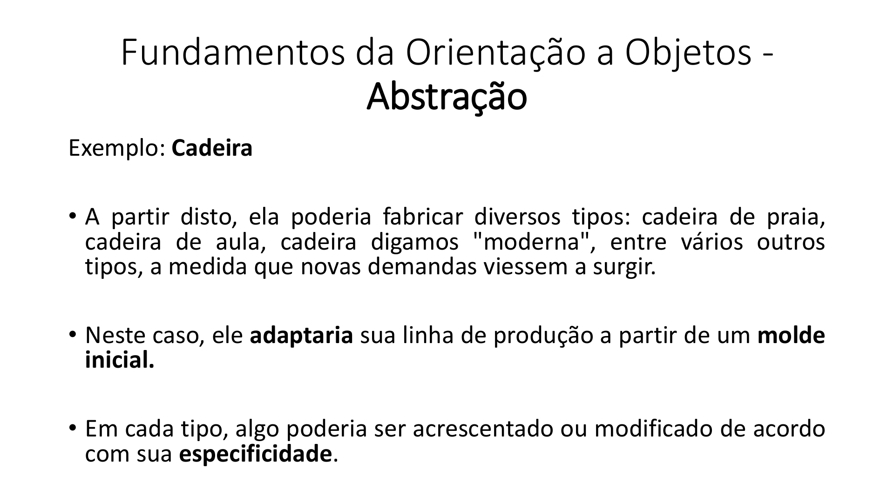
Fundamentos da Orientação a Objetos - Abstração
Exemplo: Cadeira
A partir disto, ela poderia fabricar diversos tipos: cadeira de praia, cadeira de aula, cadeira digamos “moderna”, entre vários outros tipos, a medida que novas demandas viessem a surgir.
Neste caso, ele adaptaria sua linha de produção a partir de um molde inicial.
Em cada tipo, algo poderia ser acrescentado ou modificado de acordo com sua especificidade.
Página 54
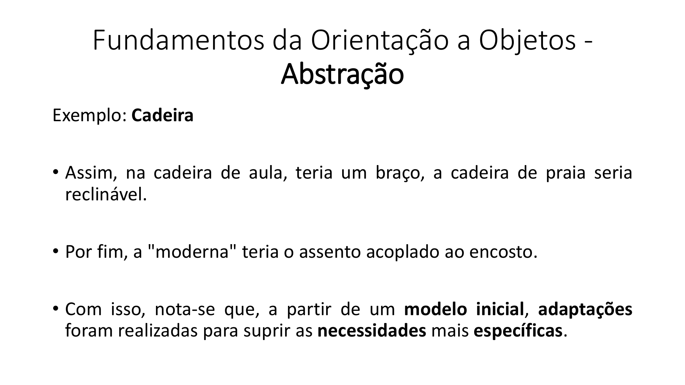
Fundamentos da Orientação a Objetos - Abstração
Exemplo: Cadeira
Assim, na cadeira de aula, teria um braço, a cadeira de praia seria reclinável.
Por fim, a “moderna” teria o assento acoplado ao encosto.
Com isso, nota-se que, a partir de um modelo inicial, adaptações foram realizadas para suprir as necessidades mais específicas.
Página 55
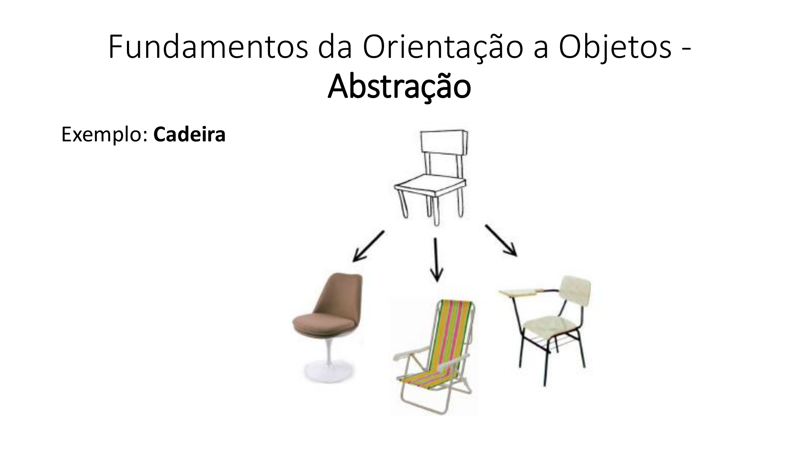
Fundamentos da Orientação a Objetos - Abstração
Exemplo: Cadeira
Página 56
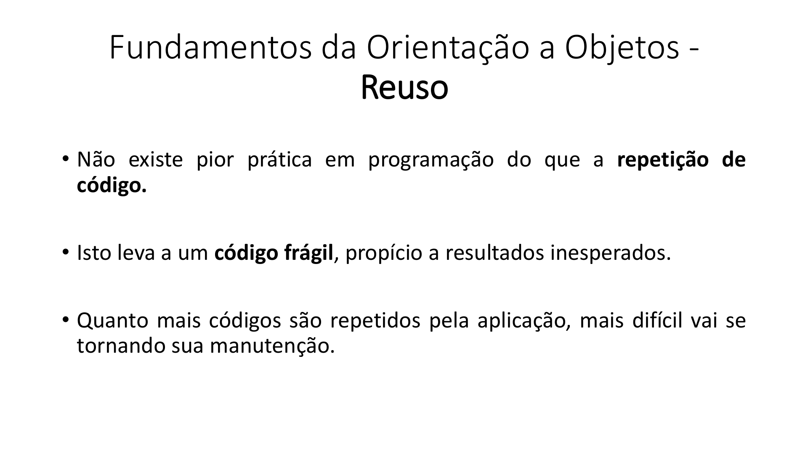
Fundamentos da Orientação a Objetos - Reuso
Não existe pior prática em programação do que a repetição de código.
Isto leva a um código frágil, propício a resultados inesperados.
Quanto mais códigos são repetidos pela aplicação, mais difícil vai se tornando sua manutenção.
Página 57
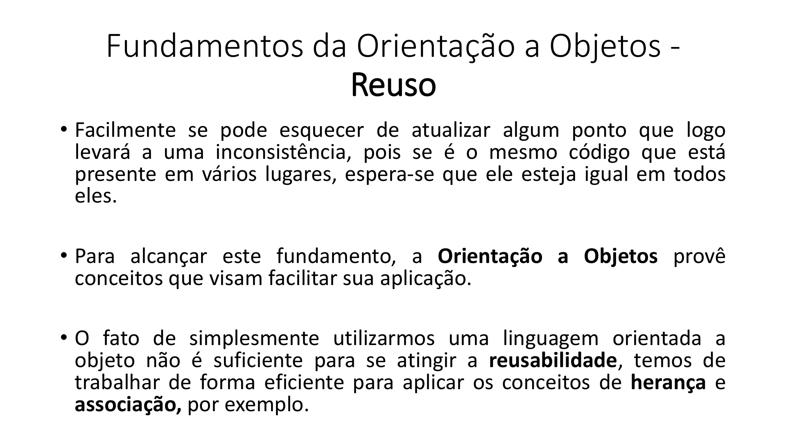
Fundamentos da Orientação a Objetos - Reuso - Facilmente se pode esquecer de atualizar algum ponto que logo levará a uma inconsistência, pois se é o mesmo código que está presente em vários lugares, espera-se que ele esteja igual em todos eles.
Para alcançar este fundamento, a Orientação a Objetos provê conceitos que visam facilitar sua aplicação.
O fato de simplesmente utilizarmos uma linguagem orientada a objeto não é suficiente para se atingir a reusabilidade, temos de trabalhar de forma eficiente para aplicar os conceitos de herança e associação, por exemplo.
Página 58
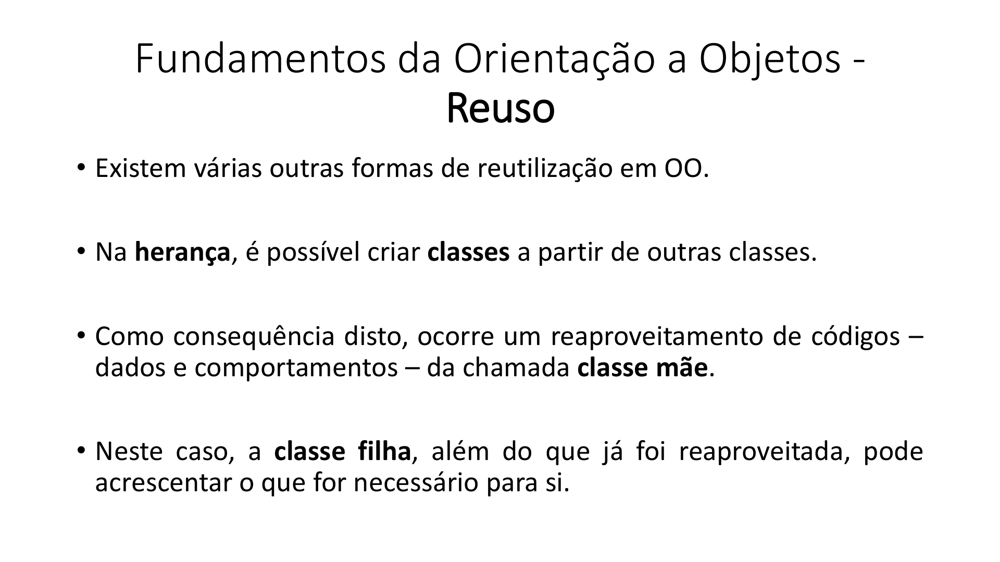
Fundamentos da Orientação a Objetos - Reuso
Existem várias outras formas de reutilização em OO.
Na herança, é possível criar classes a partir de outras classes.
Como consequência disto, ocorre um reaproveitamento de códigos – dados e comportamentos – da chamada classe mãe.
Neste caso, a classe filha, além do que já foi reaproveitada, pode acrescentar o que for necessário para si.
Página 59
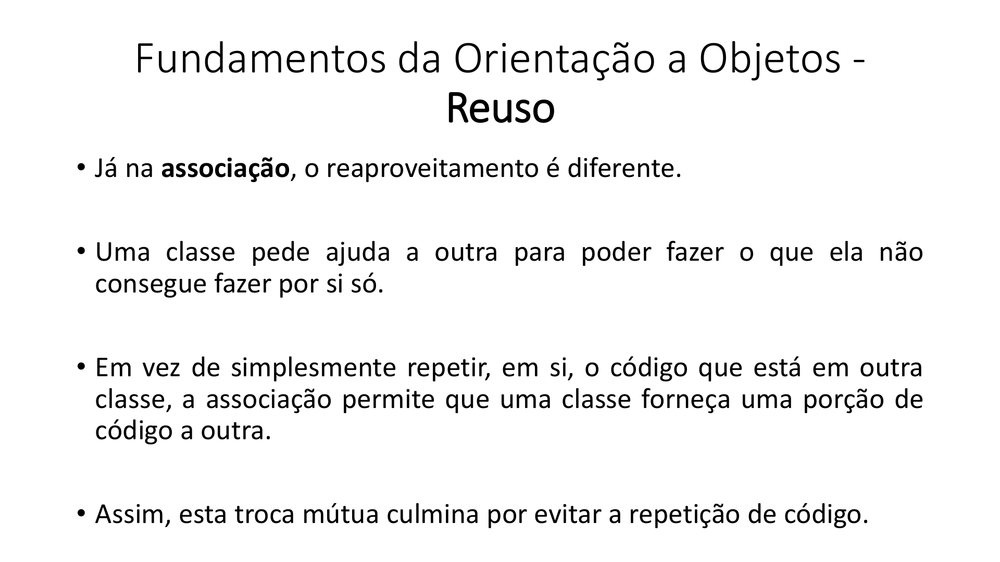
Fundamentos da Orientação a Objetos - Reuso
Já na associação, o reaproveitamento é diferente.
Uma classe pede ajuda a outra para poder fazer o que ela não consegue fazer por si só.
Em vez de simplesmente repetir, em si, o código que está em outra classe, a associação permite que uma classe forneça uma porção de código a outra.
Assim, esta troca mútua culmina por evitar a repetição de código.
Página 60
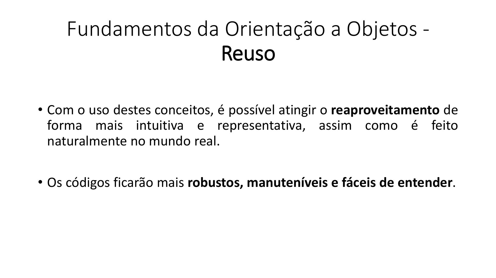
Fundamentos da Orientação a Objetos - Reuso
Com o uso destes conceitos, é possível atingir o reaproveitamento de forma mais intuitiva e representativa, assim como é feito naturalmente no mundo real.
Os códigos ficarão mais robustos, manuteníveis e fáceis de entender.
Página 61
Fundamentos da Orientação a Objetos - Encapsulamento
- Quando alguém se consulta com um médico, por estar com um resfriado, seria desesperador se ao final da consulta o médico entregasse a seguinte receita:
Página 62
Fundamentos da Orientação a Objetos - Encapsulamento
A primeira coisa que viria em mente seria:
Onde achar essas substâncias?
Será que é vendido tão pouco?
Como misturá-las?
Existe alguma sequência?
Página 63
Fundamentos da Orientação a Objetos - Encapsulamento
Seria uma tarefa difícil – até complexa – de ser realizada.
Mais simples do que isso é o que os médicos realmente fazem: passam uma cápsula onde todas estas substâncias já estão prontas. Elas já vêm encapsuladas.
Com isso, não será preciso se preocupar em saber quanto e como as substâncias devem ser manipuladas para no final termos o comprimido que resolverá o problema.
Página 64
Fundamentos da Orientação a Objetos - Encapsulamento - O que interessa é o resultado final, a cura do resfriado.
- A complexidade de chegar a essas medidas e como misturá-las não interessa. É um processo que não precisa ser do conhecimento do paciente.
RECEITUÁRIO (ENCAPSULADO)
1 comprimido de Resfriol. Ingerir com água. Repetir em momentos de crise.
Página 65
Fundamentos da Orientação a Objetos - Encapsulamento
Essa mesma ideia se aplica na Orientação a Objetos.
A complexidade que desejamos esconder é a de implementação de alguma necessidade.
Com o encapsulamento, podemos esconder a forma como algo foi feito, dando a quem precisa apenas o resultado gerado.
Página 66
Fundamentos da Orientação a Objetos - Encapsulamento
Não importa para quem requisitou algum processamento/comportamento ter conhecimento da lógica realizada para gerar o resultado final.
Apenas o resultado obtido é que é relevante.
Uma vantagem é que as mudanças se tornam transparentes, ou seja, quem usa algum processamento não será afetado quando seu comportamento interno mudar.
Página 67
Fundamentos da Orientação a Objetos - Encapsulamento
Uma outra característica do encapsulamento é também a ocultação da informação.
Ele blinda o aspecto interno do objeto em relação ao mundo exterior.
Cria-se uma casca (os métodos) ao redor das características (os atributos), que tem como finalidade evitar resultados inesperados, acessos indevidos.
Página 68
Atividade no Wordwall
https://wordwall.net/play/18026/104/848
Página 69
Dúvidas
alana.neo@ifms.edu.br